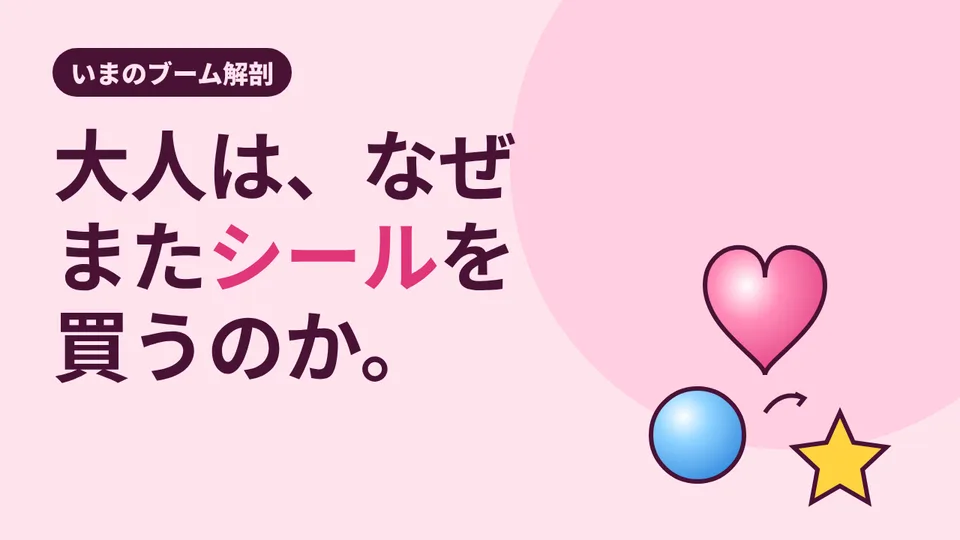

LOTUS VISUAL JOURNAL / いまのブーム解剖 #02
なぜ大人は、またシールを買うのか。
ボンドロ・ブームの解剖
写真も、スタンプも、スマホの中にいくらでも持てる時代です。
それなのに、手のひらに乗る 1 枚のシールが、入荷から数十分で売り切れる。いま起きているのは、懐かしさだけでは説明しきれない現象かもしれません。
01 / STORY1,500 万枚と、平成の教室
「ボンボンドロップシール」、略して「ボンドロ」。表面がぷっくりと盛り上がった、つやのあるシールです。作っているのは、文具・雑貨メーカーのクーリア。広告業界誌・宣伝会議の取材記事(2026 年 2 月)は、累計出荷数を 1,500 万枚と紹介しています。2026 年 11 月に発表された「新語・流行語大賞」のノミネート語にも、「ボンボンドロップシール(ボンドロ)」が入りました。
記事によると、店頭やネット通販では入荷から数十分で売り切れることもあり、同社の担当者は需要を「想定外かつ規格外」と語っています。工場を広げて増産を進めているものの、品質を保ったまま量を増やすのは簡単ではない、とも。
意外なのは、誰が買っているかです。開発時に想定していたのは、未就学児から小学校低学年の女の子。ところが実際の購入の中心は、20 代後半から 30 代の「平成女児世代」でした。教室でシールを交換し合った子どもたちが大人になり、あのころお小遣いでは買えなかったものを、いま手に入れている。そんな構図だと担当者は見ています。
02 / MECHANISM画面では出せない光り方
では、なぜ「いま」なのか。取材記事が挙げる理由は、大きく 2 つです。
一つは SNS。2025 年には、スマホの背面をシールで飾る投稿が広がり、コミュニティができていきました。テレビや雑誌での紹介は 2025 年 5 月ごろから増え、8〜9 月に一気に勢いがついたといいます。もう一つは商品そのもの。表面の凹凸が光を受けて、角度によってきらきらと光る。買った人からは「懐かしいけれど、シールとしては新しくて可愛い」という声があったそうです。
ここで、少し考えてみます。スマホの画面は、どんな色でも映せます。でも、画面の光は「中から出る光」です。一方、ぷっくりしたシールの光は、部屋の明かりを受けて「表面で返す光」。手に取って傾ければ、光り方が変わる。画面の中の写真では、その変化までは持ち歩けません。
そして、シールは渡せます。SNS で見せ合い、実物を交換する。画面で見つけて、手で確かめる。デジタルと物が、行ったり来たりしているのがこのブームの面白いところです。
03 / TWIST大人向けに、しなかった
買い手の中心が大人だとわかれば、商品を大人向けに作り変えたくなるのが自然です。ところが、担当者の答えは逆でした。ターゲットを大人に変えるつもりはない。小さな子どもが喜ぶ世界観を軸にし続け、その結果として幅広い人に選ばれる商品でありたい、と。
大人が惹かれたのは、子ども向けの「本気」だったのかもしれません。大人の好みに合わせて薄めた瞬間に、平成の教室の記憶とつながる何かが消えてしまう。誰のために作るのかを動かさないことが、かえって世代を越える力になっている。ブームの真ん中には、そんな静かな判断がありました。
ブームはいつか落ち着きます。それでも、手に取った人の記憶に残る「物の手ざわり」は、次の流行の土台になっていくはずです。
04 / ON SITELOTUS VISUAL の現場では
イベントの会場でも、似たことが起きていると感じます。大きな LED ビジョンは「中から出る光」で、遠くの人にも情報を届けるのが得意です。一方で、来場者が足を止めて写真を撮るのは、画面と一緒に、さわれる物や立体の装飾が写り込む場所だったりします。
だから会場づくりでは、画面だけで完結させず、画面の光が実物にどう当たり、どう写るかまで考えます。来場者がスマホで撮るなら、撮ったときに画面がきれいに写るか(モアレの話もご覧ください)。画面の前に何を置き、どこから撮ってもらうか。画面で見つけて、会場で確かめる。その行き来をつくるのも、映像の仕事の一部だと考えています。
05 / TAKEAWAY今日の持ち帰り
- ボンドロは累計出荷 1,500 万枚(2026 年 2 月の取材記事時点)。買い手の中心は 20 代後半〜30 代の「平成女児世代」。
- SNS で見つけ、実物で光り方を確かめ、交換する。デジタルと物の行き来がブームを広げた。
- 会場づくりも、画面だけで完結させない。画面の光が、さわれる物とどう一緒に写るかまで考える。
関連:LED ビジョン・映像機材のレンタル・LOTUS VISUAL の事業案内
出典:宣伝会議 AdverTimes「累計出荷数は1500万枚!『ボンボンドロップシール』のクーリアに聞く、いま『シル活』が大ブームのわけ」(2026 年 2 月 25 日。累計出荷数、売り切れの状況、想定外の需要、購入層、SNS とメディア露出の時期、商品の特徴、ターゲットを変えない方針)／KAI-YOU「2026年『新語・流行語大賞』発表」(2026 年 11 月 5 日のノミネート発表)。2026 年 11 月 10 日閲覧。数字は記事掲載時点のものです。